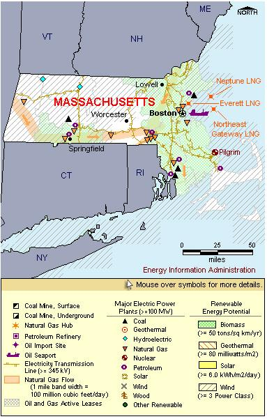

State Overview
There is one operating nuclear power plant in Massachusetts:
Pilgrim in Plymouth County
- The Pilgrim reactor is the 12th smallest commercial reactor in the United States.
Contribution of Nuclear Power
With a little over 600 MW of nuclear capacity, Massachusetts has the 3rd smallest capacity of the 31 states with nuclear power.
Nuclear power represents about 5% of Massachusetts’ total electric capacity, but it produces over 10% of the State’s electricity generation, third behind coal and natural gas.
Massachusetts imports a quarter of its electricity.
License Renewals
- Pilgrim: On January 7, 2006, a license renewal application was submitted for the Pilgrim reactor. The current license expires in June 2012.
Permanently Shutdown Commercial Reactors
- Yankee Rowe in Franklin County

|
| Massachusetts Total Electric Power Industry, Summer Capacity and Net Generation, by Energy Source, 2008 |
| Primary Energy Source |
Summer Capacity
(MW) |
Share of State Total
(Percent) |
Net Generation
(Thousand MWh) |
Share of State Total
(Percent) |
| Nuclear |
685 |
5.1 |
5,869 |
13.8 |
| Coal |
1,662 |
12.3 |
10,629 |
25.0 |
| Hydro and Pumped Storage |
1,901 |
14.1 |
357 |
0.8 |
| Natural Gas |
5,839 |
43.2 |
21,514 |
50.6 |
| Other1 |
- |
- |
773 |
1.8 |
| Other Renewable1 |
299 |
2.2 |
1,255 |
3.0 |
| Petroleum |
3,120 |
23.1 |
2,108 |
5.0 |
| Total |
13,505 |
100.0 |
42,505 |
100.0 |
| Massachusetts Nuclear Power Plants, Summer Capacity and Net Generation, 2008 |
| Plant Name/Total Reactors |
Summer Capacity
(MW) |
Net Generation
(Thousand MWh) |
Share of State Nuclear
Net Generation
(Percent) |
Owner |
Pilgrim Nuclear Power Station
Unit 1 |
685 |
5,869 |
100.0 |
Entergy Nuclear Generation Co |
1 Plant
1 Reactor |
685 |
5,869 |
100.0 |
|
Plant Profiles
Pilgrim Nuclear Station
| Pilgrim Nuclear Power Station |
| Unit |
Summer Capacity
(MW) |
Net Generation
(Thousand MWh) |
Summer Capacity Factor
(Percent) |
Type |
Commercial Operation Date |
License Expiration Date |
| 1 |
685 |
5,869 |
97.8 |
BWR |
12/1/1972 |
6/8/2012 |
| |
685 |
5,869 |
97.8 |
|
|
|
Operator: Entergy Nuclear Generation Company
Location and Service Territory: Pilgrim is located on a 1,600-acre site in Plymouth, Massachusetts.
Construction Cost: $462.25 million (2007 USD)
Reactor Description: Pilgrim has a single General Electric Type 3 boiling water reactor that uses low-enriched uranium dioxide with maximum enrichments of 4.6 percent by weight uranium 235 and fuel burnup levels of 48,000 megawatt-days per metric ton uranium.
Cooling System: Pilgrim reactor uses a once-through cooling system that draws from the Atlantic Ocean.
see also:
more annual nuclear statistics
projected electricity capacity to 2035
international
electricity statistics
|
|